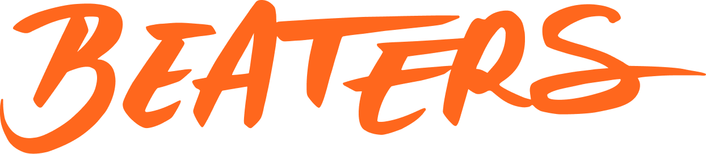

Fondée par Moïse Uri, Beaters est une startup ambitieuse née d'une volonté claire : contrer la surconsommation de chaussures grâce à un principe simple et vertueux, l'entretien et la réparation. Au cœur des enjeux actuels, Beaters place l'écologie et la consommation durable au premier plan.
Pour son fondateur, la basket dépasse le simple effet de mode ; elle est le reflet d'une personnalité et d'un art de vivre ("lifestyle"). C'est pourquoi Moïse a choisi d'entreprendre dans ce secteur, fusionnant sa passion pour la culture sneaker avec les techniques d'upcycling. Son objectif est double : prolonger la vie de vos chaussures et agir concrètement pour l'environnement.
Startup en plein essor, Beaters affiche une ambition claire : devenir la référence en matière d'entretien et de rénovation de sneakers. Pour transformer ce potentiel en notoriété durable, une stratégie de déploiement globale a été orchestrée. Le cœur de cette démarche réside d'abord dans un ancrage digital fort : un site web dédié permet non seulement de faciliter l'accès à nos services de réparation, mais surtout de poser les fondements de notre vision écologique et de valoriser notre savoir-faire artisanal.
Mon rôle a été de concevoir l'écosystème numérique de Beaters. J'ai développé un site internet pensé comme une véritable vitrine, fusionnant l'univers visuel de la marque avec une présentation claire de ses services. Une attention particulière a été portée à l'expérience utilisateur (UX) afin d'offrir une navigation fluide et de garantir un tunnel de conversion optimal.
Au-delà de la conception technique, cette immersion en startup m'a permis d'appréhender les réalités de l'entrepreneuriat. J'ai pu évoluer dans un environnement à la fois stimulant et exigeant, où la polyvalence et la compréhension des enjeux business sont essentielles.
Les compétences qui m'ont permis d'apporter de la valeur à mon travail sont variées et complémentaires. Le Web Design m'a aidé à structurer le site de manière efficace et intuitive, tandis que la maîtrise des CMS m'a permis de le concevoir et de le gérer avec fluidité.
Ce stage s'est conclu sur une excellente note. Moïse a été pleinement satisfait du travail livré, soulignant particulièrement l'investissement et la détermination sans faille dont j'ai fait preuve pour mener à bien cette mission.